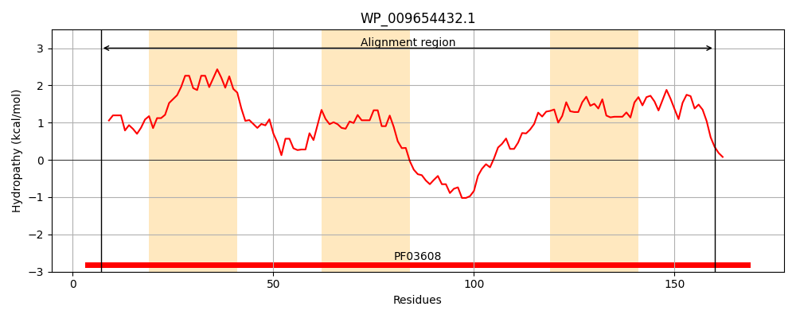
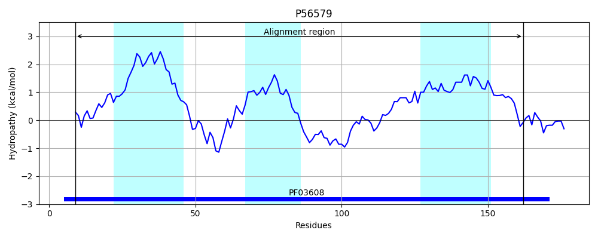
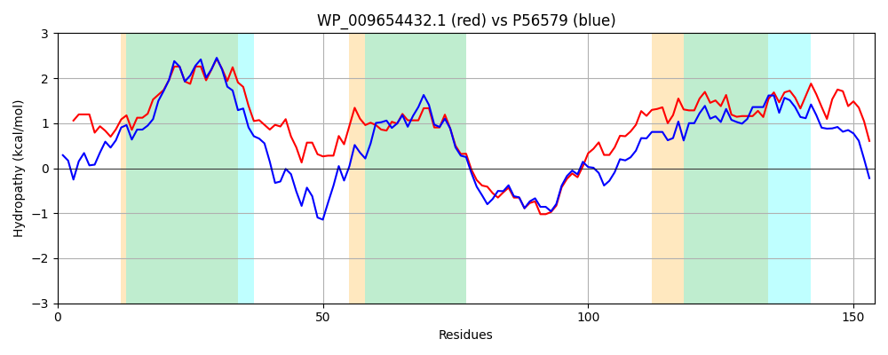

Hit Accession: P56579
Hit TCID: 4.A.4.1.1
Hit Description: gnl|BL_ORD_ID|11013 gnl|TC-DB|P56579|4.A.4.1.1 PTS SYSTEM, GLUCITOL/SORBITOL-SPECIFIC IIC2 COMPONENT (EIIC2-GUT) (GLUCITOL/SORBITOL-PERMEASE IIC2 COMPONENT) (PHOSPHOTRANSFERASE ENZYME II, C2 COMPONENT) - Escherichia coli.
Mach Len: 154
e:0.000000
Query TMS Count : 3
Hit TMS Count: 3
TMS-Overlap Score: 2.950000
Predicted Substrates:CHEBI:30911;glucitol
BLAST Alignment:
| Protein Hydropathy Plots: | |
|---|---|
|  |  |
Pairwise Alignment-Hydropathy Plot: | |
|  | |